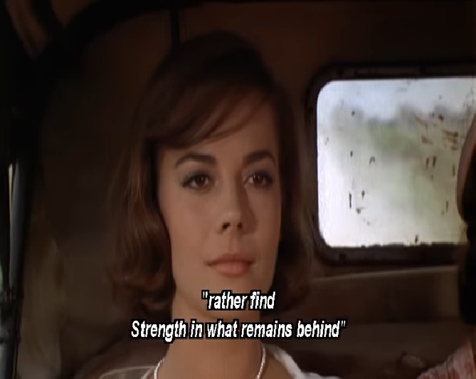

초원의 빛 (Splendor in the grass)
게시: 2019-04-03T23:40:09+09:00
Splendor in the grass by William Wordsworth What though the radiance which was once so bright Be now for ever taken from my sight, Though nothing can bring back the hour Of splendour in the grass, of glory in the flower, We will grieve not, rather find Strength in what remains behind; In the primal sympathy Which having been must ever be; In the soothing thoughts that spring Out of human suffering; In the faith that looks through death, In years that bring the philosophic mind. 한때 그토록 찬란했던 광채도 이제는 영원히 볼 수 없으리 그 어떤 것으로도 돌이킬 수 없으리 초원의 빛이여 꽃의 영광이여 그래도 슬퍼하지 않으리 차라리 그 자리에 남은 것에서 힘을 찾으리 언제나 존재했고 앞으로도 존재할 태초의 연민에서, 인간의 고통에서 피어나는 위로의 사색에서, 죽음 너머를 바라보는 믿음에서, 마음에 달관을 가져오는 세월에서.
